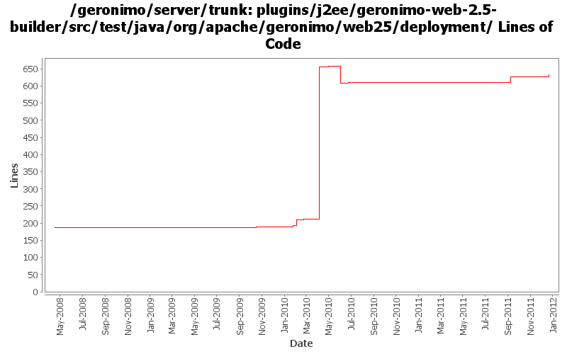

[root]/plugins/j2ee/geronimo-web-2.5-builder/src/test/java/org/apache/geronimo/web25/deployment
 security
(2 files, 254 lines)
security
(2 files, 254 lines)

| Author | Changes | Lines of Code | Lines per Change |
|---|---|---|---|
| Totals | 20 (100.0%) | 713 (100.0%) | 35.6 |
| xuhaihong | 5 (25.0%) | 523 (73.4%) | 104.6 |
| djencks | 11 (55.0%) | 184 (25.8%) | 16.7 |
| gawor | 1 (5.0%) | 5 (0.7%) | 5.0 |
| kevan | 1 (5.0%) | 1 (0.1%) | 1.0 |
| jlaskowski | 2 (10.0%) | 0 (0.0%) | 0.0 |
GERONIMO-6240 Modify configs so that they use features as the bootstrap, and fix a few compile and test errors. Servers build but do not fully start
5 lines of code changed in 1 file:
GERONIMO-6143 Create a fragment context for each sub modules in the EAR package
25 lines of code changed in 1 file:
fix junit test failures introduced by revision 1149223
1 lines of code changed in 1 file:
cf openejb rev 958340. marshal persistence.xml in the correct namespace, marshal methods names changed
1 lines of code changed in 1 file:
GERONIMO-5190 use openejb-jee jaxb tree for spec dds
173 lines of code changed in 2 files:
GERONIMO-5025, GERONIMO-5117. Make jndi supported directly by Modules and straighten out which contexts are shared when.
0 lines of code changed in 1 file:
a. Calculate web permissions while starting the web module to support setServletSecurity feature in Servlet 3.0
b. Initial support ServletContainerInitializer, some improvements might be needed, such as use ASM ?
c. Support ORDERED_LIBS ServletContext attribute
22 lines of code changed in 1 file:
GERONIMO-5037 Support Servlet 3.0 annotation and fragment web file
445 lines of code changed in 2 files:
Merge with ear environment if we are using onely one bundle
2 lines of code changed in 1 file:
GERONIMO-5057 Use those xmlbeans generated by JAVA EE 6 schema files
31 lines of code changed in 1 file:
GERONIMO-5030: Initial refactoring of some of the module deployment code to support deployment of Bundles. Also, implemented rfc66 extender that can actually deploy WABs with simple servlets and jsps.
5 lines of code changed in 1 file:
geronimo-j2ee-builder and geronimo-naming-builder compile. There seem to be packaging problems in geronimo-j2ee
3 lines of code changed in 1 file:
GERONIMO-4531, GERONIMO-4523 Simplify builder collections. Make security principal-role mappings independent of the application
0 lines of code changed in 2 files:
header fixes (Rev, Date)
0 lines of code changed in 2 files:
GERONIMO-3964 Concentrate the web security analysis in one place
0 lines of code changed in 2 files: